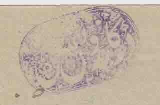
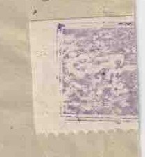
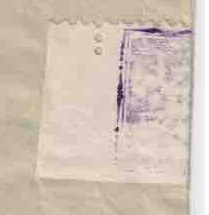
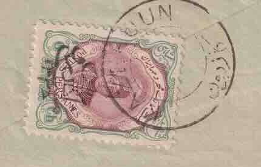

1CP-27 (violet)
The oval seal of the Kazerun nationalists, struck in violet at top left.
کازرون به شیراز
Read by two censors: the Kazerun nationalists (CP-27) and CP-22, whose violet-struck strip of sheet margin reseals the envelope over the edge.

The oval seal of the Kazerun nationalists, struck in violet at top left.

A strip of stamp-sheet margin used to seal the envelope after it was opened, struck with the violet CP-22 mark. It folds over the edge onto the back.

The other half of the CP-22 sealing strip, over the back flap.

Ahmad Shah stamp with the “Mellat-e Kazerun” handstamp, tied by the Kazerun postmark.